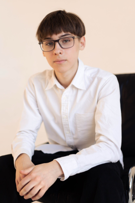

Я Иудин Никита студент 1 курса, группa 8к51, направление Программная инженерия. Я закончил 11 классов Северского лицея, в школе мне нравилась информатика, поэтому в свободное время я изучал языки программирования и старался развиваться в этом направлении. Владею языками Python,HTML и CSS.
Из личных качеств хочу отметить умение работать в команде и ответственно относиться к поставленным задачам, легко обучаем.

Мотивационное письмо
С ранних лет я пробовал себя в различных сферах деятельности, пока не пришел к программированию. Оно очень завлекло меня, и я начал изучать различные языки. Услышав про направление "Программная инженерия", я сразу же загорелся идеей поступить туда и развивать свои навыки, так как считаю данное направление универсальным. Именно поэтому я выбрал это направление в лучшем университете - ТПУ, так как здесь готовят высококлассных специалистов. Как только я узнал про Top IT, я сразу же замотивировался, чтобы туда попасть, и целыми днями занимался разработкой сайта. Я готов решать все трудности на пути к моей цели, поэтому буду очень рад попасть в эту группу.Через несколько лет я вижу себя специалистом в сфере IT, не просто исполнителем, а человеком, способным придумывать новые решения и идеи.Я хочу внести огромный вклад в эту сферу.
Портфолио индивидуальных достижений
К огромнейшему сожалению не принимал участия в олимпиадах:(